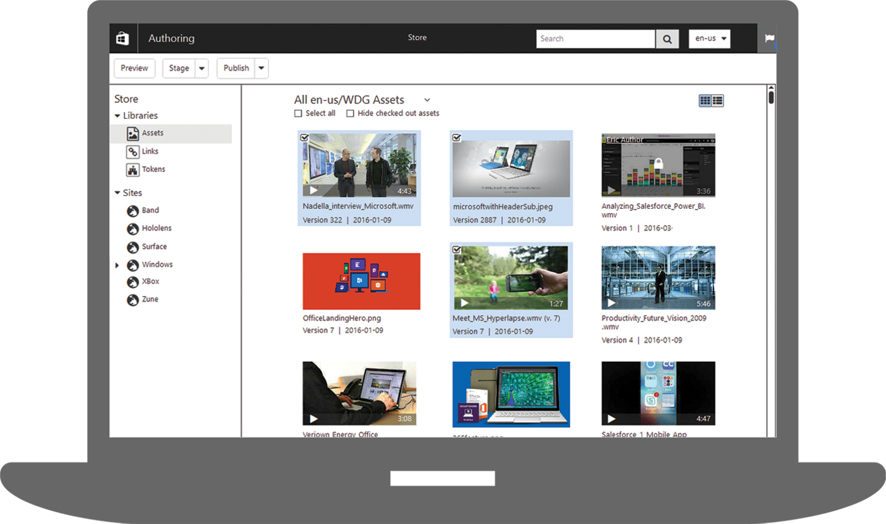

Company:
Microsoft

Developing component libraries and introducing accessibility features to an enterprise-level Content Management System.
As part of a team tasked with scaffolding the UI for an enterprise-level CMS from the ground up, I undertook an ambitious project that redefined how people at Microsoft published web sites and e-commerce pages intended for Microsoft customers.